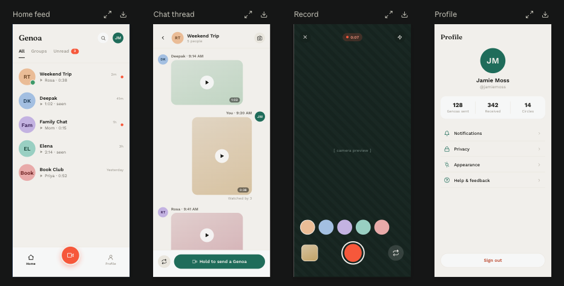

Rounded strokes on a 24-unit grid. Use 32 px icons in navigation and 20–24 px in controls, inside a minimum 48 px touch target. Select an icon to download its SVG.
Buttons
Send to Weekend TripPrimary · Teal
Keep draftSecondary · Outlined
DiscardDestructive · Explicit
A minimum 52 dp height. Use a verb, name the recipient, and keep destructive choices visually separate.
Touch targets
48 dp minimum
48 dp touch area
Keep labels and focus visible; provide an alternative to gestures.
Support large text and screen readers. Status always has words as well as a visual signal.
Watch states
New videoRosa · 0:38
New
Continue watching0:24 of 1:02
Resume
WatchedElena · 2:14
Finished
Keep new, partial, and finished distinct without relying on color. Resume where the person left off.
Replies and private notes
RT
Replying to RosaVideo · Today, 9:41 AM
Private note · Only you can see this
Ask Rosa about the trail she mentioned.
Attach replies to their source. Make a private scratchpad unmistakably personal.
Dark appearance
Respect system appearance. Keep the same hierarchy and familiar colors, with high-contrast text and a quieter surface.
EL
ElenaVoice message · 2:14
New
2:14
Record a reply
Interaction states
Record
“Recording · 0:07”
Recipient and status stay visible.
Review
“Saved on this phone”
Private preview. Nothing has sent.
Upload
“Uploading · 42%”
Real progress. Safe to retry.
Sent
“Sent · 9:20 AM”
Confirmed by the server.
After upload, show Processing your message… while server finalization is pending. Optional captions have their own status and never hold up a playable message.
Upload paused
Your recording is saved. Upload resumes when your connection returns.
Retry upload
Live sharing
“People in Weekend Trip can watch while you record.”
Start sharing liveExplicit consent before anyone can watch.
Conversation identity
Names and faces lead. Keep activity counts and engagement scores out of the profile.
Playback and capture
No surprise playback. Tap to record, then explicitly send. Live sharing is a separate choice.
Delivery status
A saved draft is not a sent message. Every error explains what happened and what to do next.
View the original design reference

Adapted with readable states, explicit sending, larger touch targets, and a profile focused on preferences. These examples describe the target design; they are not a working messaging app.